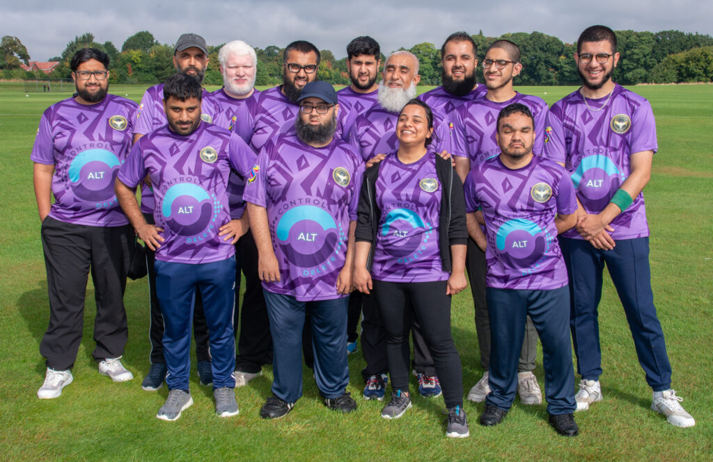
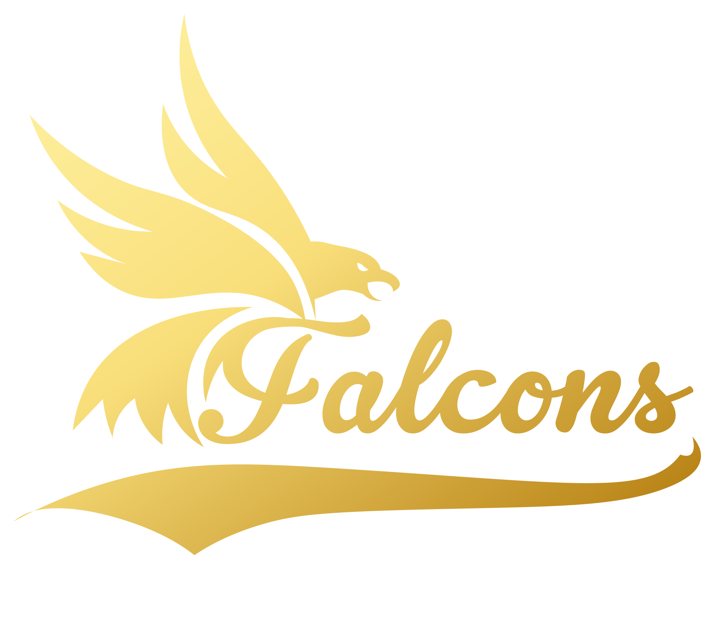

Who we are
More than a team. A community.
From a handful of friends who refused to let sight loss sideline them, to a thriving group running sport and socials every week across Greater Manchester.
Our story
It started with a bat, a ball, and a refusal to be left out
In 2019, a small group of visually impaired friends grew tired of being told which sports were not for them. So they booked a sports hall, found an audible ball, and started playing cricket themselves.
Word spread quickly. Friends brought friends. Coaches volunteered their time. Before long one weekly session became several, and cricket was joined by goalball, football, baseball, walks and regular socials. Today, Greater Manchester Vis is a home for more than 120 members, supporters and volunteers — and the Greater Manchester Falcons proudly carry our colours into competition.
We are run by and for visually impaired people. Every decision we make starts with one question: does this help more people take part?


Our team
The Greater Manchester Falcons
When we compete, we fly as the Falcons. The gold falcon is worn with pride by our cricketers, goalballers and footballers — a symbol of everything this community has built together.
Mission & vision
Our mission
To remove every barrier — practical, social or attitudinal — that stops blind and partially sighted people in Greater Manchester from enjoying sport and community life.
Our vision
A region where visual impairment is never a reason to sit on the sidelines, and where every newcomer finds a teammate, a guide and a friend on day one.
Our journey
How we got here
-
2019
The first session
A handful of friends book a sports hall and start playing VI cricket with an audible ball.
-
2021
The Falcons take flight
Our cricketers form a competitive team — the Greater Manchester Falcons — and enter their first league.
-
2023
Six and counting
Goalball, football, baseball and guided walks join the programme. Monthly socials become a fixture.
-
2026
A community of 120+
We support more than 120 members and supporters, with trained guides and volunteers at every session.
What we stand for
Three promises behind everything we do
Welcoming
No pressure, no judgement. Come exactly as you are and we will find a way for you to take part.
Inclusive by design
Sessions are adapted for every level of sight, with trained guides, audible equipment and clear communication.
Community first
The sport is the spark — the friendships are what keep people coming back, season after season.
Our partners
Proudly working alongside
We are supported by national bodies and local organisations who share our belief in inclusive sport.
Come and be part of it
Whether you want to play, support or volunteer, there is a place for you here.